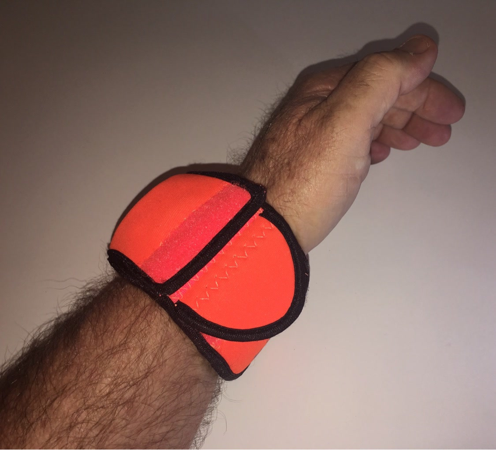

From the blog
Sunburst Orange: Stand Out While You Stay Covered
October 20, 2026

Most watch gear tries to disappear. Black on black, gray on gray, the quiet look. Nothing wrong with that. But some days you want gear with a pulse, something you can spot across the room and find in a dark bag without digging. That is where Sunburst Orange comes in.
This is the loudest color in the WATCH-ET lineup, and it earns it. Sunburst Orange is the color of safety vests and hunting caps, of buoys and trail markers. It says you are out doing something, not sitting still. If your watch spends its life on job sites, in the woods, on the water, or under a truck, a bright sleeve means one glance tells you exactly where it is.
Easy to spot, hard to lose
A black watch on a black workbench disappears. A black watch in a dark gym bag disappears. An orange sleeve does not. Set your watch down on a tailgate, toss it in a duffel, leave it on the nightstand in a dim room, and that flash of orange finds it fast. It sounds like a small thing until the day it saves you twenty minutes of tearing the truck apart looking for a watch that was sitting right there.
Built for folks who work outside
Hunters already know the value of orange. Road crews, linemen, landscapers, and anyone who works around moving equipment know it too. Out there, high visibility is not a fashion choice. It is how you stay seen. A Sunburst Orange sleeve matches the rest of your kit, from the vest to the cap, and it keeps your watch guarded through the whole shift.
Same tough protection, louder look
The color is the only thing that changed. You still get the thick neoprene body that cushions everyday knocks, the flap that folds over the face to guard the crystal, and the side pocket for small essentials. It slips on in seconds and stays put whether you are swinging a hammer, running a saw, or casting a line at first light.
What it pairs with
Orange plays well with black, camo, denim, and just about any work boot ever made. It looks right on a rugged digital watch, an Apple Watch with a tough band, or a field watch with some honest miles on it. If your everyday carry leans tactical or outdoors, this color fits right in without trying too hard.
If your current setup is all black everything and you are ready for a change, Sunburst Orange is the move. Loud enough to find in a hurry, tough enough to trust on the job.
Ready to add some color?
Medium $23 fits watches up to 48mm. Large $25 fits up to 53mm. Five colors.
Order Yours More Tips